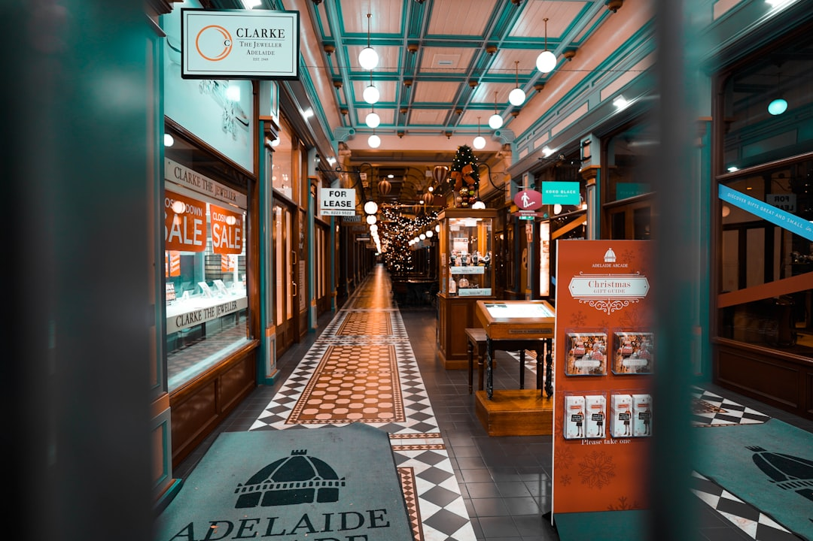

For homeowners comparing tiling adelaide options, the useful starting point is not the tile colour, but the room condition, water exposure, substrate and trade sequence behind the finished surface.
Tiling Adelaide Explained
Adelaide Tiling & Waterproofing presents tile work as a visible finish sitting over preparation, set-out and wet-area decisions. That is a useful way to read any quote. A neat tile face will not resolve an unsuitable base, unresolved movement, poor falls or an unclear wet-area boundary.
Before comparing providers, write down what is being tiled, what is staying, what is moving and whether moisture is already visible. The published guidance points to 3 practical checks: describe the room or fault, separate the layers, then compare the written scope. A bathroom, laundry, kitchen, living area or alfresco job should not be reduced to square metres alone.
Who this applies to
This guide suits owners planning a visible tile upgrade, a wet-area renovation, or an investigation into cracked, loose, leaking or deteriorated shower finishes. It also suits buyers trying to brief a provider before selecting tiles, because tile format, drainage, fixtures and substrate can change the work needed before the first tile is laid.
- Bathroom and ensuite projects: record fixtures, niches, thresholds, wastes, penetrations and finished floor height questions before demolition.
- Kitchen and laundry areas: coordinate splashbacks, floors and wet zones with cabinetry, appliances and plumbing.
- Interior floors and walls: ask how the existing surface will be assessed before layout is priced.
- Outdoor and alfresco areas: include exposure, drainage, slip needs and substrate movement in the brief.
Waterproofing questions before tiling
Wet-area work needs a different level of questioning from a dry feature wall. The provider page states that tiles and grout are finishes, while the waterproof layer sits behind them. For a shower or bathroom renovation, ask the provider to identify membrane boundaries, penetrations, threshold heights, product cure sequencing and the handover point to tiling.
Leak symptoms should be diagnosed before a repair is sold. Moisture can be associated with sealant, plumbing, substrate movement or the membrane system, so regrouting should not be treated as a universal repair. A useful shower repair brief separates visible symptoms from items that still need inspection.
Adelaide context that changes the brief
Locality matters when it changes access, exposure or substrate expectations. The provider page names apartment access in the city, coastal exposure at Glenelg and Henley Beach, older villa substrates through Norwood and Unley, and newer slabs around Mawson Lakes or Mount Barker as examples that can affect preparation and sequencing.
For an apartment, ask how access, lift use and waste removal will affect the sequence. For a coastal or outdoor surface, ask how exposure, drainage and slip needs will be assessed. For an older property, ask what substrate checks are needed before demolition or tile ordering. For newer slab work, ask how movement joints and adjoining floor transitions will be set out.
Comparing written scopes without guessing
A quote becomes easier to compare when each provider responds to the same brief. Give the room, suburb or postcode, surface type, visible symptoms, fixtures that may move and any known product details. The provider page asks enquirers to say what is tiled, what is changing, the suburb and whether moisture is already visible.
Read exclusions as closely as inclusions. If waterproofing, screeding, demolition, plumbing coordination, electrical coordination, hazardous-material questions, tile supply, waste removal or access are not stated, ask whether they are included, excluded or subject to inspection. For a narrower wet-area planning angle, this related bathroom tiling Adelaide guide focuses on layout and substrate decisions.
What to ask before accepting
The strongest pre-acceptance questions are practical and documentable. Ask who confirms the actual scope, what licence or authorisation applies to work that requires it in South Australia, what products will be used, and how trade coordination will be recorded. The provider page states that an independent provider remains responsible for confirming scope, licensing, products and trade coordination in writing.
Also ask how cure time will be handled. The provider page does not give one universal wait period, because cure depends on the membrane system, film thickness and site conditions. That answer should come from the product specification and the installer responsible for recording the system used.
- Describe the room. Record the room type, existing surface, visible symptoms, fixtures, drainage and whether moisture is already present.
- Separate hidden layers. List plumbing, substrate, waterproofing, screeding and finish assumptions as separate items before asking for a price.
- Compare written scopes. Check preparation, inclusions, exclusions, access, waste, licensed work details and product responsibilities side by side.
- Confirm sequencing. Ask when demolition, rough-ins, waterproofing, cure, tile set-out and handover will occur in the provider's written plan.
| Project type | Main scope question | What to confirm in writing |
|---|---|---|
| Dry wall or feature tiling | Is the substrate suitable for the selected tile format? | Preparation, layout, trims, grout, movement joints and access |
| Wet-area tiling | Where does the waterproofing responsibility start and finish? | Membrane boundaries, penetrations, thresholds, cure sequence and handover |
| Shower repair or regrouting | Is the visible fault a finish issue or a deeper moisture issue? | Diagnosis, exclusions, previous repairs and whether inspection is required |
| Outdoor or alfresco tiling | How will exposure, drainage and movement affect the work? | Surface preparation, falls, slip needs and adjoining transitions |
This guide covers practical scope planning for Adelaide tile finishes, wet-area waterproofing interfaces, shower repair questions and quote comparison.